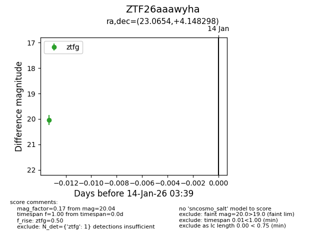
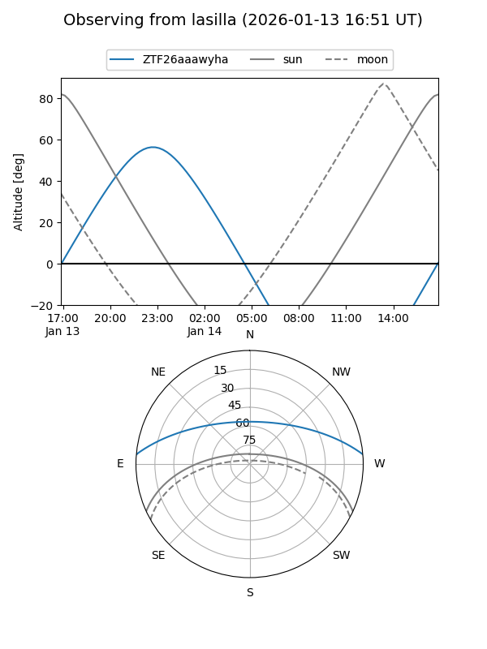
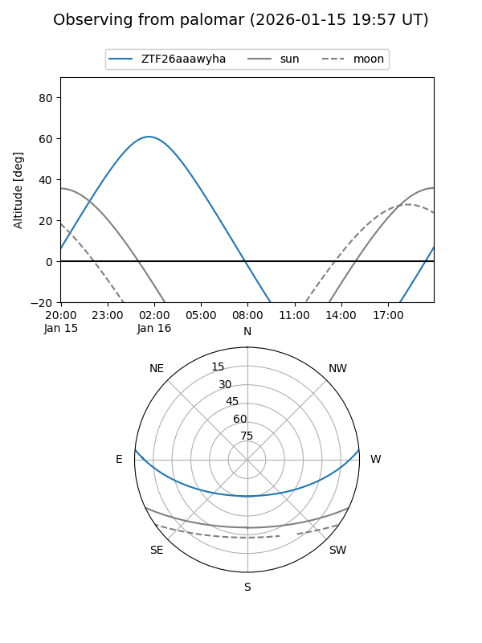

ZTF26aaawyha
Target ZTF26aaawyha at 2026-01-14 03:39
Aliases and brokers:
FINK: link
Lasair: link
ALeRCE: link
alt names
ZTF26aaawyha (ztf,fink_ztf)
Coordinates:
equatorial (ra, dec) = 23.0654,+4.14830
equatorial (HMS+DMS) = 01:32:15.69,+04:08:53.87
galactic (l, b) = (141.9755,-57.20631)
Flags:
Photometry:
last ztfg=20.04
1 ztfg detections
Lightcurve

Visibility


Additional plots